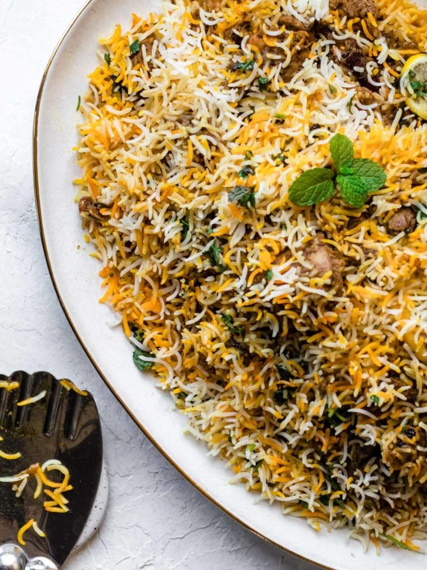
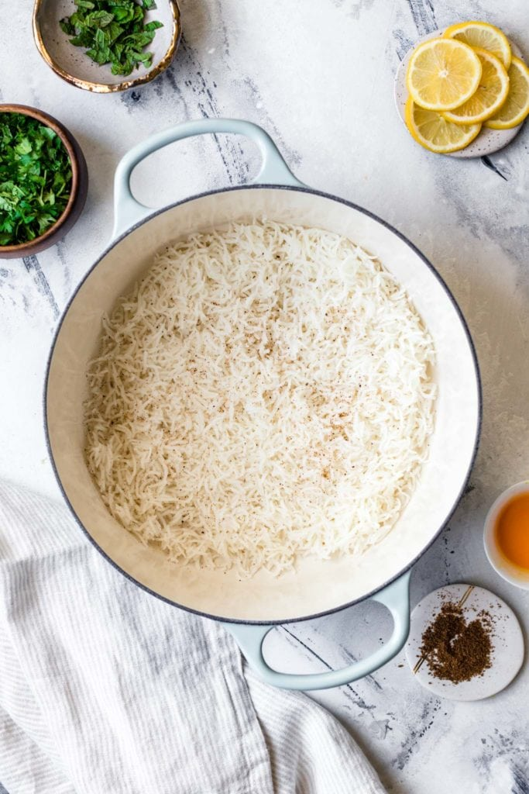
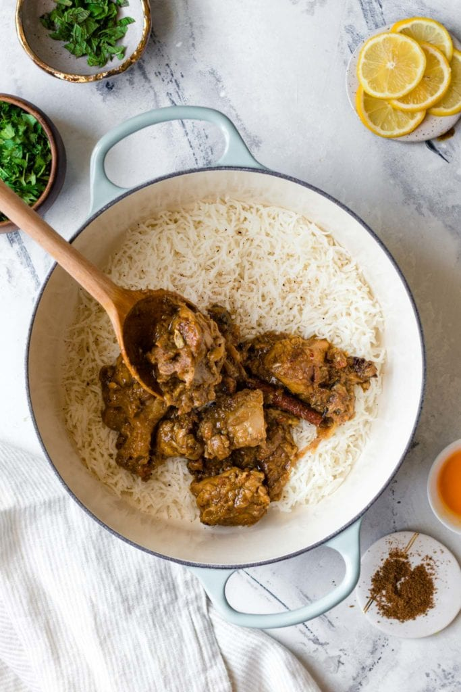
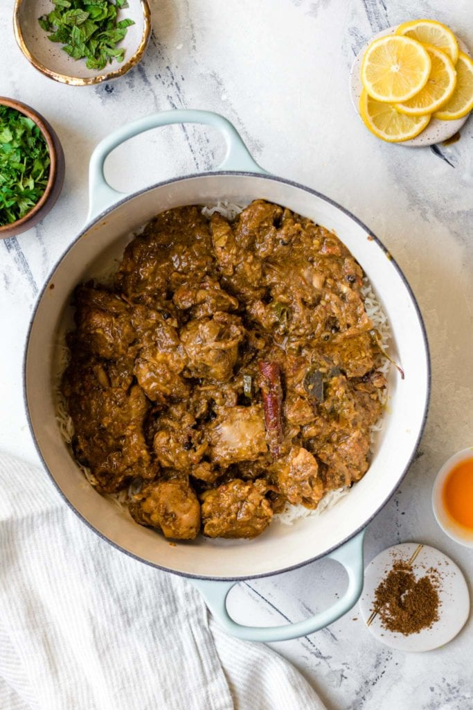
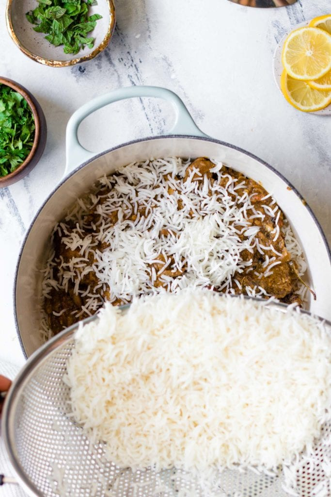

Biryani

Description
Biryani is an intricate rice dish made with layers of curried meat and rice. Given its use of adornments and luxurious finishes, it's no surprise that biryani has roots in Persian cuisine.
There are two main methods of making biryani:
- Kachi (raw) biryani, made with raw meat and parboiled rice and cooked together, and
- Pakki (cooked) biryani, in which cooked meat and parboiled rice are steamed together.
In Pakistan, pakki (or cooked) biryani is most common, with several prominent varieties such as Sindhi, Karachi-style, and Bombay biryani. This recipe is an amalgamation of these styles and is similar to what you'd find at a typical Pakistani or Indian restaurant or dinner party.
Ingredients
- Oil/Ghee: I've used oil for fluidity and ghee for taste.
- Onions:You can either thinly slice them (more traditional) or finely chop. If using a food processor to do this, pulse to chop so that it doesn't blend into a paste.
- Bone-in, cut up, skinless Chicken:I buy pre-cut up pieces of a whole chicken, but bone-in chicken thighs work too. You can also use boneless chicken, though it may require a shorter cooking time.
- Whole spices:A generous amount of whole spices are a distinct characteristic of biryani. Whole spices are meant to be discarded while eating, but if you don't want to bite into them, feel free place them in a spice/muslin bag.
- Garlic + Ginger:I've given their quantities in whole form and tablespoons. I use a mortar and pestle or a food processor to crush them.
- Tomatoes:Since biryani has lots of sour ingredients like yogurt, dried plums (alu Bukhara), and lemon, I've found keeping the tomatoes to a minimum gives it just the right amount of tang.
- Yogurt:Not only does a yogurt marinade make the chicken more tender and flavorful, but it also makes cooking the biryani much smoother. For a dairy-free option, try using coconut milk.
- Rice:I suggest using aged, long-grain basmati rice you can find at some grocery stores, any Indian/Pakistani specialty store, or online.
- Dried Plums (Alu Bukhara):Alu Bukhara are often used in biryani to give a sweet, tangy taste. They're usually available at South Asian grocery stores, but if you can't find them, you can either substitute with dried prunes or omit.
Steps
These are 3 parts to making chicken biryani:
- Prepare the chicken curry.
Prepare the biryani masala (or use store-bought) and marinate the chicken.
Cook the chicken curry. While it's cooking over low heat, prepare the rice.
- Parboil the rice.
Bring a pot of water to a boil and parboil the rice. Drain and set aside
- Bring it all together for a final steam ('dum').
Layer half of the rice, all of the chicken, and then the remaining rice on top. Add the finishing touches.
Allow steam to develop, then lower the heat and let the flavors meld.




BIRYANI MASALA
Pakistani biryani is heavy on spice (and flavor!), and is often made with biryani masala, or simply put, a medley of spices that come together to give it a distinct, masaledar (or spice-laden) taste.
I recommend you use the biryani masala recipe below (all you need is a good spice grinder and a few extra whole spices). If you'd prefer not to, you can substitute your favorite store-bought biryani masala. This recipe has been tested and works great with Bombay Biryani Masala.
To make Biryani masala for this recipe, combine the following ingredients in a spice grinder and process until mostly smooth. Makes ~2 tbsp, which is the exact quantity you'll need for this recipe.
- 1 medium dried bay leaf (tez patta)
- 2 dried button red chili peppers (sukhi lal mirch)
- 1 small whole mace (javetri)
- 1 2-inch cinnamon stick (daarchini)
- 4-5 whole cloves (loung)
- 1 black cardamom (badi elaichi)
- 1 star anise (baadiyan)
- 3-4 green cardamom pods (elaichi)
- 1tsp roasted cumin seeds or black cumin seeds (shahzeera)
- 1/2 tsp black peppercorns (kaali mirch)
- 1/4 tsp fennel (saunf)
- 1/4 tsp carom seeds (ajwain)
Note: You don't have to have every single one of these spices to make a wonderful biryani. Don't worry if you're missing some - it'll still give your biryani exceptional flavor!
HOW TO MAKE THE CHICKEN TENDER AND FLAVORFUL
There are 3 components that make the chicken tender and deeply flavored:
- Marinate the chicken in spices and yogurt. This infuses the chicken with noticeable flavor. Ideally, marinate overnight or for at least a couple hours, but I tested and found that it's still very tasty if you marinate just before making the biryani.
- Take the chicken out of the fridge before you start preparing the biryani. Allowing the chicken to come closer to room temperature helps it cook more evenly and stay tender.
- Lastly, after sautéing the chicken in the hot oil, add water and allow the chicken to simmer gently, covered, over low heat.
HOW TO PARBOIL THE RICE TO ENSURE FLUFFY RICE IN BIRYANI
Identifying doneness can be confusing, so I've simplified it by giving time parameters to take the guesswork out of boiling.
If you're using the recommended aged, long-grain basmati rice, you'll need to boil for 5 minutes. If you're using newly harvested basmati rice often found in American grocery stores, it'll require a shorter boiling time (around 4 minutes).